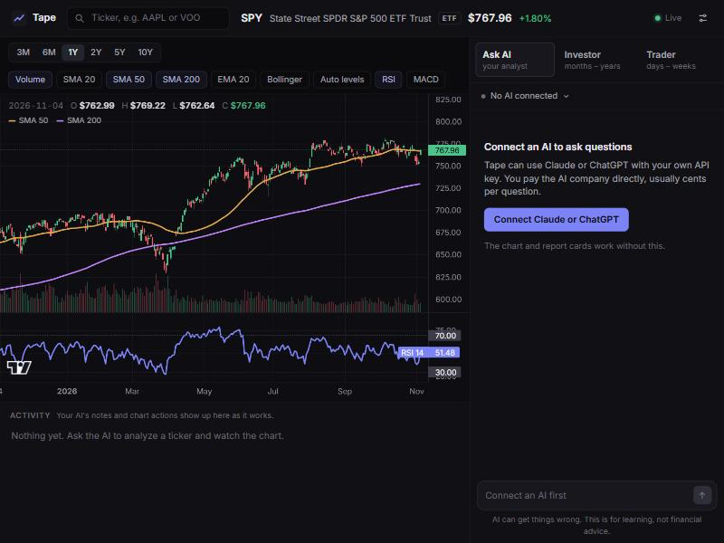

Tape
A stock and ETF dashboard for learning how to evaluate US stocks. It runs on your own computer, and you can ask Claude or ChatGPT about what you're looking at while it draws on the chart.

The chart and two report cards (investor and trader views) work with no AI at all. Connect one when you want to ask questions.
1. Start Tape
- Unzip it. On Windows, right-click the zip and choose Extract All. On a Mac, double-click the zip. Put the Tape folder anywhere you like.
- Open it. Windows: double-click
Start Tape. Mac: right-clickStart Tape.commandand choose Open. Linux: run./start-tape.shin a terminal. - Wait a couple of minutes the first time. It downloads a private copy of Python and the libraries Tape needs. It uses about 400 MB of disk space. You don't have to install anything, and nothing else on your computer changes. After this it starts in seconds.
- Your browser opens to Tape. Leave the small black window open while you use it. Closing that window quits Tape.
Tape has been tested on Windows. The Mac and Linux starters are new and haven't been run on those systems yet, so tell the person who sent you this if they give you trouble.
Your computer may warn you the first time, because this app isn't from a big publisher.
- Windows ("Windows protected your PC"): click More info, then Run anyway.
- Mac ("can't be opened"): open System Settings, go to Privacy & Security, scroll down and click Open Anyway.
Only do this if you got the zip from someone you trust.
2. Connect an AI (optional)
Tape doesn't come with any AI access. You use your own key from Claude or ChatGPT, and pay that company directly for what you use. You only need one.
A subscription isn't an API key. Claude Pro and ChatGPT Plus don't include API use. API accounts are separate and pay-as-you-go, even if you sign in with the same email.
Claude
- Sign up at console.anthropic.com.
- Under Billing, add a little credit. $5 is plenty to start.
- Under API Keys, create a key and copy it. It starts with
sk-ant-.
ChatGPT
- Sign up at platform.openai.com.
- Under Settings, then Billing, add a little credit. $5 is plenty to start.
- Under API keys, create a key and copy it. It starts with
sk-.
Then in Tape, click Connect Claude or ChatGPT in the panel on the right, choose your AI, paste the key, and click Save and test. You're looking for a green "Connected" message.
What it costs
You pay per word, more or less. These are rough estimates for one full analysis of a stock. A follow-up question usually costs less. Every answer shows its own estimated cost underneath, so you'll see real numbers quickly.
| Model | One full analysis, roughly |
|---|---|
| Claude Opus 5.5, the Claude default | 20¢ |
| Claude Sonnet 5.5, or GPT-6.1 Sol (the ChatGPT default) | 10¢ |
| Claude Haiku 5.5, or GPT-6 Luna | around 1¢ |
| GPT-6 Astra | 45¢ |
Change models any time in Settings. Both companies let you set a monthly spending limit in their billing settings, and it's worth doing that.
3. Try it
- Type a ticker in the search box at the top, like
AAPLorVOO. - Ask the AI "Analyze NVDA" and watch it load the chart, draw levels and mark dates as it explains.
- Ask "Compare VOO, QQQ and SCHD" or "What does P/E mean?"
- Open the Investor and Trader tabs and click any metric to see what it is, how to read it, and the common trap.
Your privacy
- Your API key is saved on this computer only, and is only ever sent to the company it belongs to. It isn't in the Tape folder, so you can pass that folder on without passing on your key. Don't send anyone the data folder listed below.
- Your questions and the market data needed to answer them go to the AI you chose, under your account and that company's terms.
- The tickers you look at are requested from Yahoo Finance.
- Nothing goes to anyone else, including the person who sent you this. Tape has no accounts and no tracking.
If something goes wrong
- "Tape needs to be unzipped"
- You opened it from inside the zip. Extract the whole zip first (step 1).
- Setup stopped with an error
- It needs internet for the first run. Try again; it picks up where it left off. Work networks sometimes block the downloads, so try a home network if it keeps failing.
- The browser didn't open
- Go to
http://127.0.0.1:8740yourself. If something else was already using that port, the black window shows the address Tape used instead. - "Rejected this API key"
- Paste the key again in Settings and make sure you copied all of it, or create a new one.
- "Out of credit"
- Add credit in that company's billing page. New credit can take a few minutes to apply.
- "This key can't use..." or a message about verifying your organization
- Your account doesn't have that model yet. Pick a different model in Settings. OpenAI asks some accounts to verify their organization before using its newest models.
- A number looks out of date
- Prices refresh after 4 hours and company data after 24. Data comes from Yahoo Finance's unofficial feed, which can lag or occasionally break. When a fetch fails, Tape shows the last copy it has.
Updating and removing it
To update, replace the Tape folder with the new one. Your key, chat and watchlist are kept.
To remove it, delete the Tape folder, then delete the data folder. That also deletes your saved key and chat.
| Windows | %LOCALAPPDATA%\tape (paste that into the File Explorer address bar) |
|---|---|
| Mac | ~/Library/Application Support/tape |
| Linux | ~/.local/share/tape |